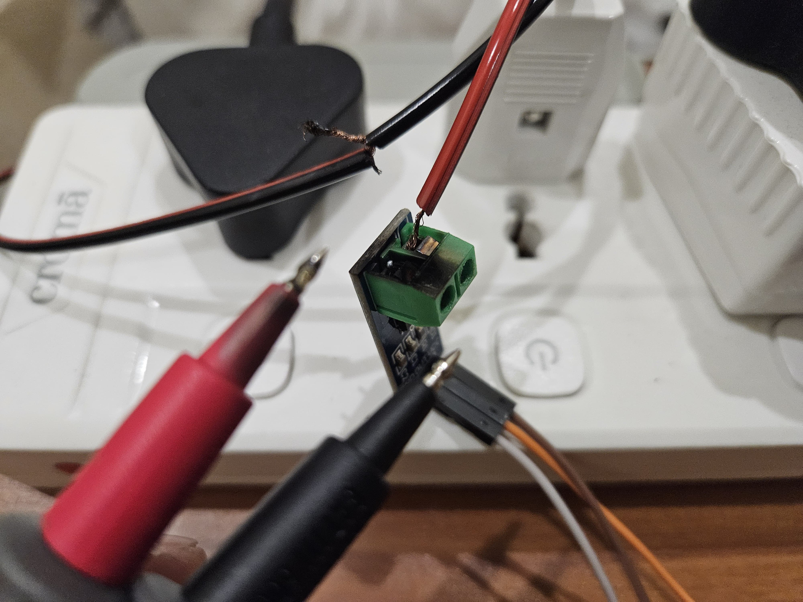
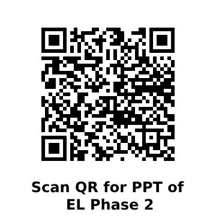

Our Mission
To develop a reliable and intuitive energy management system that empowers users to monitor, optimize, and save energy efficiently.
Did We Face any Challenges?
- Component Variability: Different circuits required different components, complicating the design process.
- Wrong configuration of bulb and holders.
- Loose Connections: Encountered loose connections at multiple points.
- Damaged Sensor: A spark ignited during testing, which led to the failure of the ACS712 sensor.
- Wrong Choice of sensor: We chose ACS712 instead of a contactless SCT013 current sensor.

Tools and Softwares Used:
- SCT013 current sensor
- ZMPT010b voltage sensor
- ESP32 Microcontroller
- Arduino IDE
- Blynk platform
- VS Code for Developing website

Partial Results (till Phase 2):
- ACS-712 (5A) Current Sensor Circuit: Results weren’t entirely accurate.
- ZMPT101B Voltage Sensor Circuit: Results weren’t perfect, but close.
- Blynk Dashboard: Successfully created a dashboard for real-time monitoring and control.